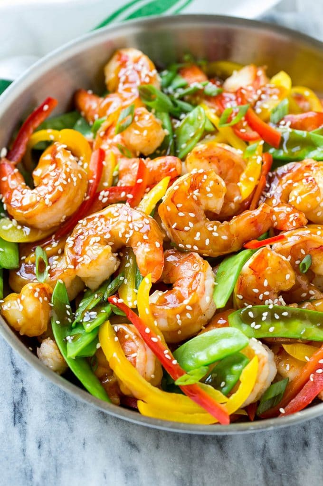

Home
Shrimp Stir Fry

Description
Here is a great option for a savory and tasty dinner!
ingredients
- 100-200g Shrimps
- 3 tbsn Corn Flour
- 1 tbsn Soy Sauce
- 2 tbsn Olive Oil
- Fresh Vegetables of your choice
- 1tspn ground ginger
- 50g cooked white rice
- 200ml Chicken Stock
Steps
- Stir the corn flour, stock, soy sauce and sesame oil in a small bowl until the mixture is smooth.
- Heat 1 tablespoon olive oil in a 12-inch skillet over medium-high heat. Add the shrimp and stir-fry until they're cooked through. Remove the shrimp from the skillet.
- Heat the remaining olive oil in the skillet. Add the vegetables, ginger and garlic powder and stir-fry until the vegetables are tender-crisp.
- Stir the corn flour mixture in the skillet. Cook and stir until the mixture boils and thickens. Return the shrimp to the skillet and cook until the mixture is hot and bubbling.
- Serve over the rice.